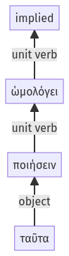

Lysias, Oration 1, 1.22.1-1.22.3a
1.21.28-1.21.40a | 1.22.4-1.22.17a
Sentence 57
1.22.1-1.22.3a
ὡμολόγει ταῦτα ποιήσειν.
1 ὡμολόγει
2 ταῦτα ποιήσειν
ὡμολόγει ταῦτα ποιήσειν.
Highlighting:
- connecting words
- unit verb
- subject
- object
Color code:
- independent clause (level 1, transitive verb)
- infinitive in indirect statement (level 2, transitive verb)
